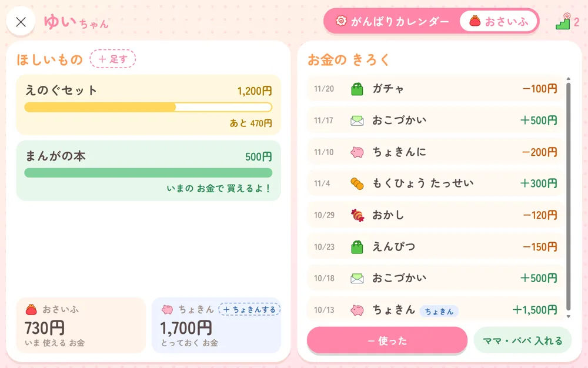
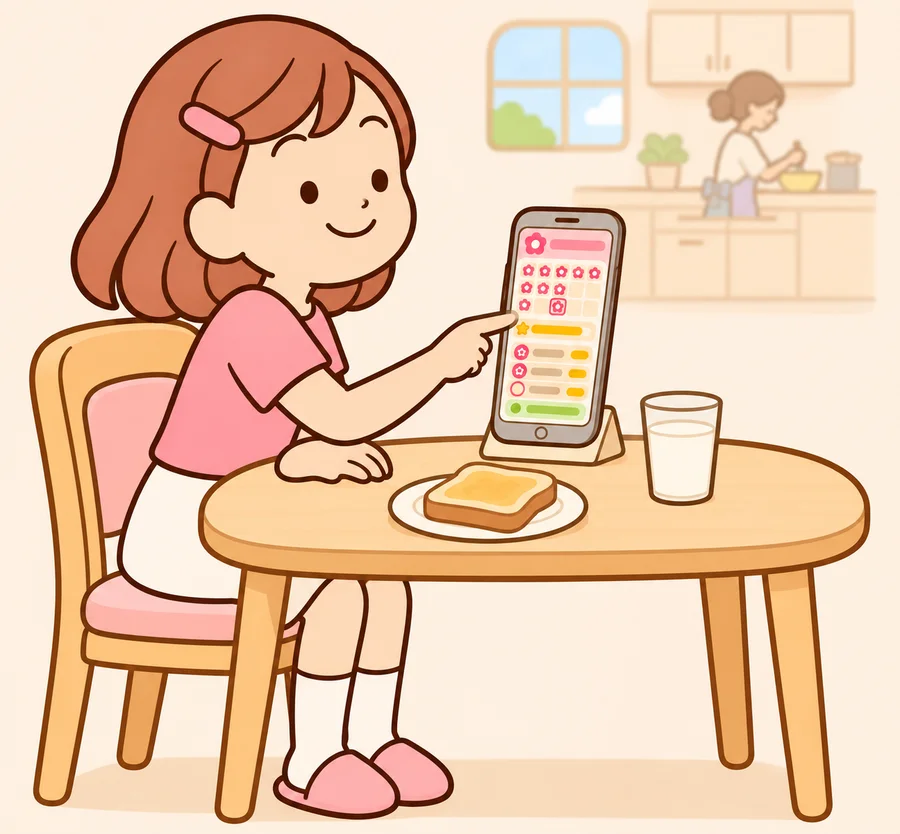

はなまるボード
今日がわかる。自分でできる。
- 基本無料
- 広告なし
- 登録なし
着替えた？
傘持った？
毎朝の声かけを、少しでも減らしたくて作りました。
天気・予定・やることがひと目でわかり、子どもが自分で動けるボードです。
余ったタブレットでも、スマホ1台でも。
使ってみる
Android のスマホ・タブレット
Android アプリ（テスト版）おすすめ
はなまるボードを、しっかり使ってみたい方へ。
同じ Wi-Fi のスマホから「みました」を押す・毎日のお知らせ・端末の Google カレンダーの予定を出す、などアプリだけの機能があります。Google Play で公開する前のテスト版なので参加の手続きがありますが、無料です。
Android テスト版に参加するiPhone・iPad・PC
ブラウザ版
iPhone・iPad の方や、まず見てみたい方へ。
インストールせずに試せます。ホーム画面に追加すると、アプリのように開けます。無料です。
ブラウザで試してみるアプリとブラウザ版のちがいは、下の表にまとめています。
はなまるボードでできること

今日のことが、自分でわかる
時計・天気・予定をひとつの画面に。「今日は傘がいるかな？」「次は何をするんだっけ？」と、子どもが自分で気づくきっかけになります。

できたら、自分でチェック
自分のやることを、できたら自分でチェック。寝る前におうちの人が「みました」を押すと、その日のカレンダーに はなまるがつきます。できたことを、親子で一緒にふり返れます。

「もう できる」が増えていく
言われなくてもできるようになったことは、おうちの人が「もう できる」にまとめます。名前の横の緑の階段の数が、少しずつ増えていきます。
はなまるを集めるだけでなく、自分でできることが増えていくのを大切にしています。

お金のことも、少しずつ
「おさいふ」では、使ったお金やちょきんを、子どもが自分で記録します。ほしいものに向けて、お金の使い方を考えるきっかけに。使いたいお子さんだけオンにできます。
使い方

1
まずはスマホで手軽に
iPhone・Android のスマホ1台から。食卓に立てておけば、朝、子どもが自分で今日のことを確かめられます。
2
リビングに置く
余ったタブレットや iPad を、リビングのカウンターなどに。家族みんなのボードになります。

3Android アプリ
置いて、スマホからもつなぐ
置いたタブレットはそのままに、同じ Wi-Fi のおうちの人のスマホ（iPhone も）から「みました」や設定ができます。
データの安心
- 広告なし
- アカウント登録なし
- 家族の記録は端末の中に保存
家族の毎日の記録だからこそ、安心して使えることを大切にしました。はなまる工房のサーバーに、ご家庭の記録を集めることはありません。
くわしく
- アカウント登録はいりません。名前やメールアドレスを運営者に送ることはありません。
- アプリ・ブラウザ版とも、記録はその端末の中に保存します。運営者が見たり集めたりすることはできません。
- 2台で使うときも、家の Wi-Fi の中だけでつながります。つなぐときは番号で確かめます。
- ブラウザ版の Google ドライブへの控えは、あなた自身のドライブに置きます。はなまるボードが作ったファイルだけを扱い、ほかのファイルは見ません。運営者には届きません。
- 表示に必要な通信はします。天気の予報（気象庁）や、設定したカレンダーの予定を読み込みます。家族の記録は送りません。
Android アプリとブラウザ版のちがい
| Android アプリ | ブラウザ版 | |
|---|---|---|
| 使える端末 | Android のスマホ・タブレット | iPhone・iPad・PC など |
| はじめ方 | テスト版に参加して Google Play から入れる | インストール不要 |
| 使い方 | スマホ1台でも。タブレットを置いて家族のボードにも | 基本は1台で |
| スマホから | 同じ Wi-Fi のスマホから「みました」や設定（使い方の3） | なし（その端末で押します） |
| お知らせ | 毎日のお知らせ（通知） | なし |
| 予定 | 端末の Google カレンダーを選ぶだけで出せる | なし |
| 画面 | 決まった時間に画面をつける・ボードを自動で開く | 自分で開く |
| 端末を替えるとき | 設定の「おうちの人」→「データの書き出し・読み込み」 | Google ドライブの控えから戻す（書き出し・読み込みも可） |
アプリを置いて使うときは、同じ Wi-Fi の iPhone からも、置いた端末に出る QR コードを読み取ってブラウザで使えます。
ブラウザ版の記録は、その端末のブラウザと、お使いの Google ドライブ（つないだときだけ）に保存します。ドライブとのつながりは仕組み上1時間ほどで切れるため、設定を開いたときなどに Google の画面が一瞬出ます。
記録を守るため、iPhone・iPad は「ホーム画面に追加」してください
Safari のまましばらく開かないと、記録が消えることがあります。ホーム画面に追加して、そこから開いてください。
- 「ブラウザで試してみる」で開く
- 共有ボタン（四角から上向きの矢印）を押す
- 「ホーム画面に追加」→「追加」
iOS のアプリは検討中です。
はなまる工房について
小学生と幼稚園の娘が2人いる父親です。
はじまりは、妻がホワイトボードとマグネットで工夫していた毎日の準備でした。でも、毎日続けるのはなかなか難しくて。「だったらアプリにしてみよう」と作り始めたのが、はなまるボードです。
家族で1か月以上使いながら、少しずつ改良してきました。知人にも使ってもらい、感想を聞きながら直しています。同じような毎日の困りごとを持つご家庭で、少しでも役に立てたらうれしいです。
よかったら試して、感想を聞かせてください。
作っている様子や更新のお知らせは SNS で
ご意見・お問い合わせ
使ってみて気づいたことや、「こんな機能があったらいいな」という声もお待ちしています。使いにくかったところも、気軽に送ってください。
アプリを入れたあとは、アプリの設定（画面の左上の歯車）→「ヘルプ」→「ご要望・お問い合わせ」から送っていただけると、アプリのバージョンと機種が自動で入り、原因を調べやすくなるので助かります。